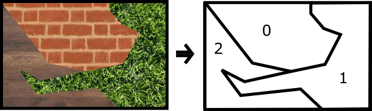

Projekt 6 - Segmentace textur na Raspberry Pi 2 (vedoucí D. Davídek)
|
Zadání
Cílem projektu je implementovat alespoň dva typy algoritmů pro segmentaci textur bez předlohy na výpočetním modulu Raspberry Pi 2 a obrazovém vstupu z kamery. Dále vytvořit databázi obrazových předloh (viz níže) čítající alespoň 20 obrazů a dohromady použít alespoň 10 typů textur. Ve výsledcích práce je nutné provést diskuzi na téma výhod a nevýhod jednotlivých segmentačních algoritmů a porovnat je s jedním dalším ne nutně implementovaným algoritmem.
Software:
- V rámci linuxové distribuce Raspbian rozchoďte knihovny pro zpracování obrazu OpenCV 3.X [1]
- Jako programovací jazyk využijte C/C++ nebo Python
Vstupy:
- Osvětlovací soustava a snímací aparatura dle vlastního návrhu
- Raspberry Pi 2 s kamerovým modulem / usb kamerou
- Papír s vytištěnými texturami dle předlohy pro snímání kamerou
- Databáze obrazových předloh = obrazy složené z regionů s různou texturou
- regiony mohou mít ostré či prolínající se okraje
- regiony by neměli být pouze pravoúhlými čtyřúhelníky
- na obrazu může být více regionů se stejnou texturou
- minimálně 4 regiony s různými texturami na jednom obraze
- formát barevný png, rozlišení minimálně 1280x960
Výstupy:
- Teoretický rozbor a porovnání dvou použitých a jednoho dalšího algoritmu pro segmentaci textur (výpočetní rychlost, invariance vůči transformacím atp.)
- Alespoň dva algoritmy pro texturovou segmentaci obrazu z kamery
- Snaha o nízkou výpočetní náročnost - jednotky FPS
- Dva módy programu ovládané předáním argumentu při spuštění
- Kamerový mód
- Vstup je přebírán z kamery
- Vstupní a výstupní obraz je zobrazen do okna jež se periodicky překresluje
- Vstupem je obraz/obrazy na disku
- Vstupem jsou data předána argumentem = obrázek / obrazy z jedné složky
- Výstupem jsou segmentované obrazy uložené se sufixem na disk
- Výstupní segmentovaný obraz by měl být indexovanou maticí, kdy jednotlivé pixely segmentů se stejnou texturou obsahují index této textury.
|
Obrazy
Ilustrace 1: Kombinovaný obraz předlohy (vlevo) a kamery (vpravo). Bounding box předlohy v obrazu kamery (bíle)

|
Klíčová slova
texture detection and segmentation, opencv, raspberry pi
|
Odkazy
[1] Install OpenCV 3 (optionally with Python) on Raspbian
[2] Medical image processing, reconstruction and restoration, Jan Jiří
[3] Prezentace: Texturní analýza obrazů, MASO
[4] Příklady texturových databází: [A], [B], [C]
|